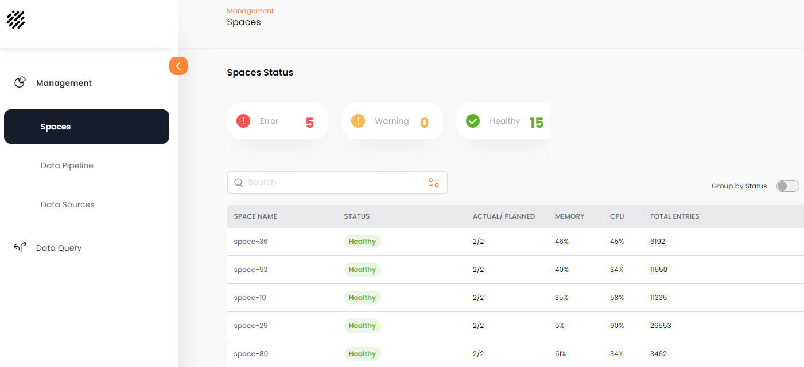

This part of the system shows the Spaces defined to the system, and allows monitoring and inspection of the Space details.
Click on the Spaces tab to view the list of Spaces in the Spaces Status screen.

You can click on a Space name to see detailed information on the Space.
The Monitoring tab displays Space-related statistics:
The Objects-Types tab displays a list of the objects (tables) associated with the Space.
Click on one of the tables to see detailed information for the table's properties and indexes.
General Information options:
Tiered Storage option:
The Partitions tab displays details about the partitions where the Space data is stored.